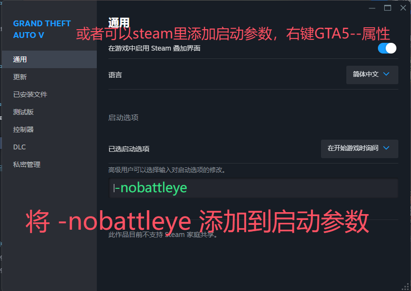
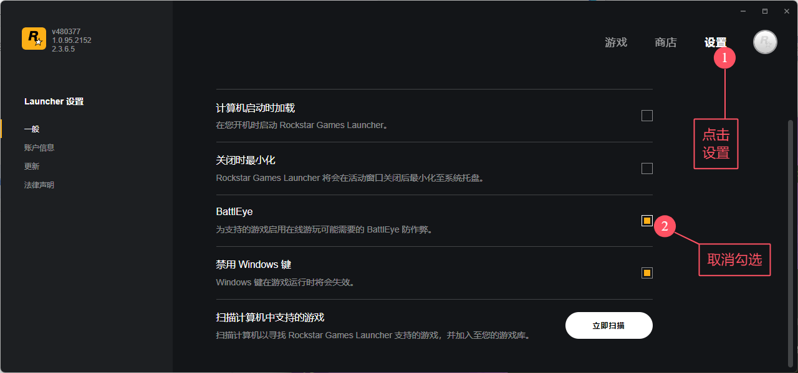
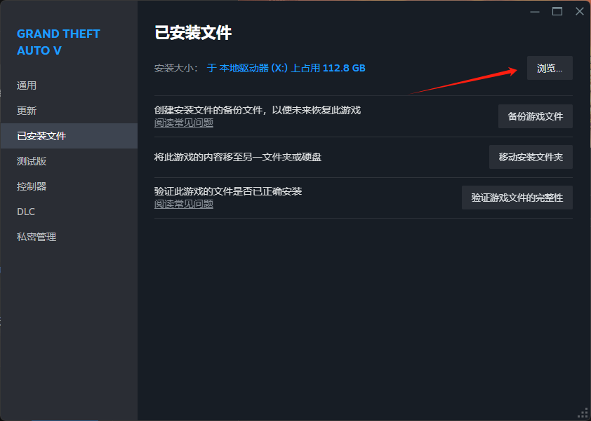
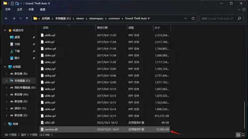

BE 与 FSL工具 详解
Battleye 战眼详解
前言
R 星在 2024 年 9 月加入了新的内核级反作弊 (BattlEye,又名 BE/战眼),导致菜单迟更/跑路/使用遇阻/功能限制等等,此篇教程/科普尽可能解决你的所有问题
现在很多菜单陆续对系统/硬件/BIOS都有部分要求,而网上教程太多让人望而却步,这里给大家整合一下，环境要求略显严格，教程看不明白地方可找银色帮助搞定！
简单讲解
开BE与关BE的区别
-
开BE用菜单：
- 无任何限制,顶着反作弊玩,
- 封不封你全看菜单稳不稳.不稳的菜单玩几天就会被BE封禁,
- 稳的菜单只要不刷钱,很少或基本不会被封,刷钱会被RAC封禁
-
关BE用菜单：
- 只能玩线上单人战局,
- （有例外情况，比如
樱桃、阿尔法可多人战局联机，以及带人任务） - 关闭反作弊,所以相对稳定,
- 只要不刷钱基本不封号,刷钱会被RAC封禁
关BE恢复绿玩防止假踢
-
只需要重新开启BE即可恢复绿玩,如果您在关BE进入多人战局,您有小概率恢复绿玩后会被假BE踢,只需等待24小时内自动恢复即可(期间不可继续使用菜单注入进入!!!)（关BE玩完之后想恢复开BE，可重启电脑之后再开BE，可最大限度避免假踢）
-
可以在 Battleye封禁查询 网站查询您的账号有没有被封禁,若没有封禁,说明是假BE踢,等待一段时间后会自动恢复,关BE的方式十分安全(请勿暴力刷金)
菜单现状
可用菜单现在基本分为几类：
-
开启BE 正常游玩不受任何限制
- 与之前一样正常使用 (开BE菜单本身需要有足够强的反-反作弊系统,目前传承版和增强版最稳的只有
Lexis,其他不好说)
- 与之前一样正常使用 (开BE菜单本身需要有足够强的反-反作弊系统,目前传承版和增强版最稳的只有
-
关闭BE 菜单自带战局磁吸，可主持公开多人联机
- 例如
樱桃、阿尔法，这种具备玩家磁吸功能- 可自己创建战局做战局主机，使用玩家磁吸吸人加入你的战局！正常游玩多人公开！
- 可进入别人主持的公开战局游玩，一般十分钟左右会掉线到单人战局，可以再使用战局追踪追回去
- 这种也可以带人进行任务（跳前置、改分红、一键完成任务），同样必须自己做主机开任务！
- 其中樱桃最为出色独家技术，可以正常做主机带人任务不掉！
- 例如
-
关闭BE ➕ FSL 本地存档
- 线上的存档改存本地，可多人公开，无限金币，随意浪随意花
- FSL可帮助关BE菜单进入多人公开
- 弊端是不用FSL后或者换电脑后 存档就会变成云端存档了，梦醒了！
- FSL详解还在帖子下面，稍后下滑查看
-
关闭BE 单人游玩、单人战局
- 除了樱桃、阿尔法这类，无战局磁吸的其他关BE菜单都是此状态
- 可通过菜单进入非公开单人战局,只能单人玩线上
- 可单人强开任务搞钱、解锁、级别，然后恢复绿玩
- 适合只想搞点钱，或者平常就自己玩的玩家
关闭BE & 开启BE 方法
- Steam 关BE （推荐）
- Rockstart客户端 关BE
推荐使用此方法，因为优先级比较高，会覆盖R星客户端的设置，而且比较快捷方便
EPIC与Steam方法相似！
添加启动参数:(可点击右侧按钮一键复制)
-nobattleye
操作路径： Steam库 → 右键GTA5 → 属性 → 通用 → 启动选项

删除此启动参数重开游戏即可，但是建议玩完关BE菜单之后想恢复绿玩，建议重启电脑再去开BE，防止遇到假踢
R星客户端里设置

问题汇总
-
如何刷钱,会不会封号？
- 可以使用菜单的任务功能刷钱，跳前置改分红，任务收入目前是非常安全的！
- 其他直接凭空刷钱现在全部不建议使用！
-
开BE与关BE的区别?
- 开BE不受任何战局限制，正常游玩！
- 关BE状态，除了樱桃、阿尔法具备玩家磁吸这种可以自己做主机联机不掉单，其他大部分只能游玩单人战局
-
会不会封号？
- 仔细看上面的说明,就算被 BE 踢也不影响,只要不在开着 BE 的情况下强行使用菜单进入线上 (支持开BE进入线上的菜单除外) 都问题不大,也不要动钱
-
xx 菜单支持开 BE 进线上,安全吗？
- 目前只有 Lexis 最安全,其他的可能有封号风险,自行斟酌使用，可联系银色咨询当下菜单情况，为你推荐
-
与支持开BE直接进线上的菜单双开可以吗,比如 Stand + 0xCheats？
- 不支持
-
我电脑放了好多菜单文件,开 BE 会不会扫盘？
- 不会,但确认你有可疑行为是会标记,到达一定程度就会 BE 封
-
如何查看我是否被封禁？
- 若你多次被 BE 踢到线下,查看以下链接,输入名称看看是不是被封了 BE封禁查询
-
增强版有的菜单可开 BE 进战局？
- 目前所有都是概率封号
-
最新菜单动态、菜单推荐、使用情况，可关注Kook群内公告频道，及时推送近期情况！
FSL工具 详解
FSL安装教程
- 使用安装器一键安装
- 自己手动安装
✨ FSL工具 下载地址
手动安装教程
设置
下载
WINMM.dll文件并将其放置在您的 GTA5 游戏根目录中，FSL 会在游戏开始时自动加载。

FSL简单讲解
一个允许您将在线存档数据转为本地存储、获取无限金钱等功能的工具！
-
本地数据：简单来讲，就是将你的线上数据保存到本地，所以你此时的任何更改都将在本地保存，不会上传到R星服务器
- 所以若你删除FSL后再进入线上，你的所有更改都将消失，获得的
资产、载具、钱等一切更改都会消失掉，恢复到安装FSL之前
- 所以若你删除FSL后再进入线上，你的所有更改都将消失，获得的
-
公开战局：目前可以通过FSL加入多人公开战局【目前只能呆几分钟】
-
主机公开：私人邀请战局无法进入，
公开战局和差事任务只能自己当创建战局和任务当主机，让其他人进入你的战局如果你需要购买资产或者赚钱的话，可以删除FSL，去单人公开战局获得，获得之后再先删除本地数据，再重新安装FSL，登录游戏后会自动同步新数据
FSL 本地存档说明
- 首次使用时若未检测到本地存档，FSL 会从 Rockstar 服务器下载您的真实在线存档
- 所有后续存档操作将指向本地硬盘：
- 禁用 FSL 时使用 Rockstar 服务器存档
- 启用 FSL 时使用本地修改存档
- 存档路径：
%APPDATA%/FSL - 重要提示：
- 建议定期手动备份存档文件
- Windows 系统重置会清除
%APPDATA%目录所有数据
金钱作弊
您现在可以通过按波浪号（~）键输入以下作弊代码：
1M：增加 $1M
10M：增加 $10M
100M：增加 $100M
1B：增加 $1B
10B：增加 $10B
已知 BUG
- ATM 机现已无法使用
- 尝试通过 Vinewood 应用领取免费 GTA+ 载具会导致你被踢出对局。请改用游戏内的浏览器进行操作
这安全吗？
- 该工具几乎不可检测，因为您的存档永远不会上传至 Rockstar 的服务器。然而，这不能完全排除 Rockstar 的检测风险，因此建议在在线游戏时加载一个有效绕过反作弊的菜单。
我可以编辑我的保存文件吗？
- 目前没有编辑保存文件的工具。但您可以使用 CodeWalker 查看保存文件内容。
我删除了 FSL，我添加的钱消失了！
- 由于 FSL 将您的在线保存数据存储在本地硬盘，重新启用 FSL 可以加载您修改后的存档。
我可以用这个绕过我的禁令吗？
- 虽然以前版本的 FSL 允许绕过禁令并在破解游戏副本中在线游玩，但现在已经无法实现。客户端需要 Rockstar 签名的 P2P 证书以证明游戏所有权及封禁状态。如果您被封禁，仍然可以在单人会话中游玩，但该功能尚未经过全面测试。
我可以与其他人共享我的存档文件吗？
- FSL 允许您在本地保存和加载数据，但与其他人共享存档文件可能导致不一致的体验，尤其是在游戏版本和反作弊环境不同的情况下。